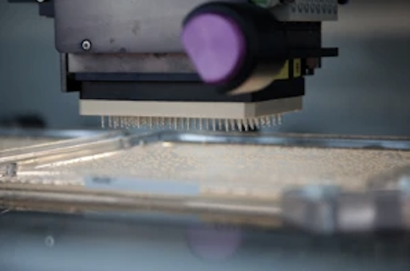

Politics holds back animal engineers
Amy Maxmen
Received 21 Aug 2021, Accepted 29 Oct 2021, Published online: 10 Dec 2021
With a rapidly growing fan base, gene-editing tools enable experiments from basic biomedical research to
crop science. Researchers use these tools to edit genomes at sites of their choosing. “The tools are now
really good, and the applications are expanding,” says Andrew Scharenberg, chief scientific officer of Cellectis therapeutics, which focuses on biomedical applications of this technology
Gene-editing tools are meeting the real world in an ongoing clinical trial sponsored by Sangamo BioSciences, whose results serve as a bellwether for the emerging industry. “It shows you the power of the tool and
how far-reaching it is,” says Nathan Wood, vice president of synthetic biology at Life Technologies. With its
drug candidate, Sangamo harnesses its intellectual property portfolio relating to a type of gene editor called
a zinc-finger nuclease (ZFN), which can cut DNA at a predetermined point, leading to the ferrying in of a
new gene or regulatory element or disrupting an existing gene.
In the trial, ZFNs are used to engineer a specific gene deletion into each patient's CD4+ T cells, a type of
white blood cell. Where the gene edit is successful, the door through which human immunodeficiency virus
(HIV) enters cells and assaults the immune system—the CCR5 co-receptor—is disrupted. According to results that Sangamo made public in September, CD4 counts have increased in study participants in a statistically significant manner.
One trial participant, Matthew Sharp, learned that he was HIV positive over 20 years ago. He battles HIV as
a patient and an AIDS activist, and his lowered CD4+ counts have made him vulnerable to infections. He is
hopeful that science might help to change his current drug regimen. “One day, after more research with this
zinc-finger technology, my dream is to be able to stop my antiretroviral medications,” Sharp said in one account about how he is faring.

The gene-editing community is watching this trial “very carefully,” as it represents a first clinical test for the
technology, says Dominic Esposito, who works with gene-editing tools on a daily basis and who has
launched a gene-editing core facility ( Box 1 ). He runs the protein expression lab at Frederick National
Laboratory for Cancer Research, which is affiliated with the US National Cancer Institute. He says that scientists need to choose mindfully from among the diversified set of gene editors, matching them to their experiment.
A wide choice of tools
The techniques to engineer and tailor targeted nucleases originated in academic labs and continue to develop there as well as in industry. Johns Hopkins University researcher Srinivasan Chandrasegaran figured
out how to hitch the nuclease domain of a restriction enzyme, Fok1, to zinc-finger proteins, thereby creating
ZFNs.
These enzymes generate targeted double-strand DNA breaks that are fixed by the cell's own repair pathways, through either nonhomologous end joining or homologous recombination. As discovered by Maria
Jasin and colleagues, a double-strand break in a particular gene greatly stimulates the efficiency with which
it can be targeted by homologous recombination. Both repair processes are now harnessed by scientists
for gene editing, either to ferry in new genes or to knock existing genes out.
Some gene-editing tools have been around nearly two decades; others are younger or even brand new. In
addition to ZFNs, the gene-editing toolbox includes meganucleases, also called homing endonucleases,
and transcription activator–like effector nucleases (TALENs), which also induce double-stranded breaks.
Transcription activator–like (TAL) effectors are virulence factors from Xanthomonas bacteria, and they give
these plant pathogens their bite: the bacteria are bad news for cotton and rice. Building in part on decades
of experience in ZFN development, scientists have rapidly discovered how to harness the DNA-binding domains of these proteins for gene editing in cultured cells and in several organisms.
A new tool on the distant horizon is an RNA-based system derived from a bacterial line of defense against
viral attack. A team from the University of California, Berkeley, the University of Vienna and Umeå University in Sweden suggests that a dual-RNA structure directing a site-specific nuclease could be the basis of a
gene-editing tool that is “efficient, versatile and programmable”. Commenting on this work, Rodolphe Barrangou from DuPont Nutrition and Health points out that a nucleic acid–based member of the gene-editing
tool family, unlike ZFNs and TALENs, would not require redesign for every DNA target.
Sponsor


Advertisement